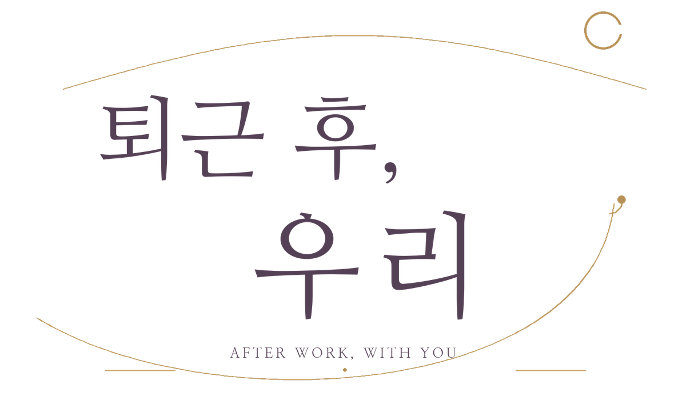
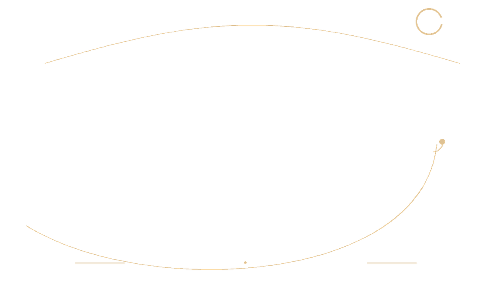

A LITTLE CLOSER, AFTER WORK

하루가 끝나고,
우리의 이야기가 시작되는 시간.
01 / 04AFTER HOURS
네 사람, 서로 다른 온도의 저녁
강리아
비가 그친 뒤에도, 조금 더 함께.
강리아
오늘 퇴근하고 시간 있어? 가 보고 싶은 곳이 하나 생겼어~




하루의 끝에서, 우리가 시작된다.
◌
오늘의 이야기를 마칠까요?
함께한 시간은 다음 저녁에도 이어져요.

다음 저녁에, 다시 만나요.